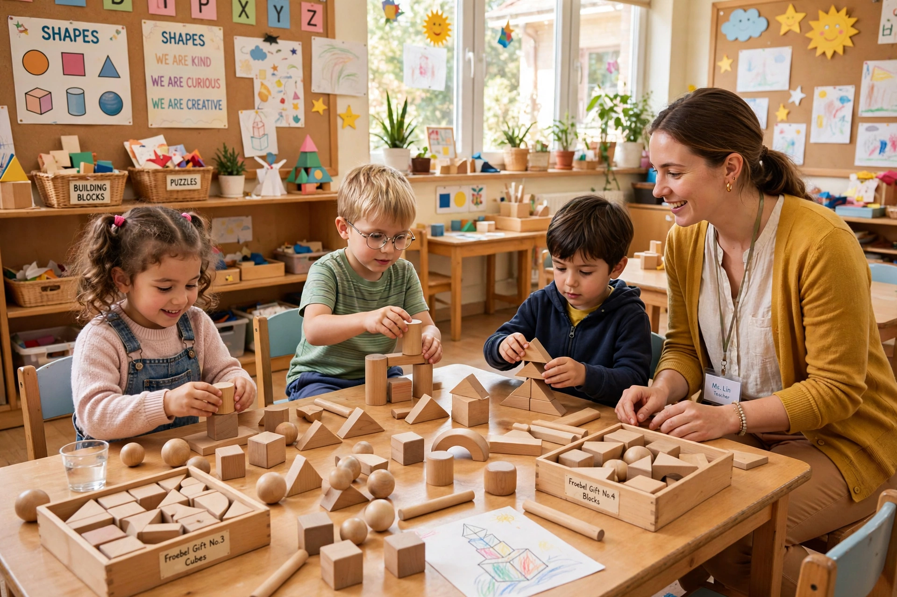

From Wikipedia, the free encyclopedia

| Term coined by | Friedrich Fröbel |
|---|---|
| First kindergarten | 1837 (play institute), Bad Blankenburg, Germany; term adopted 1840 |
| Typical ages | 4–6 years (varies by country) |
| Focus | Play-based early childhood education |
A kindergarten (German for "children's garden") is a preschool educational approach and institution for young children, based on playing, singing, practical activities such as drawing and gardening, and social interaction as part of the transition from home to school. The concept and the name were created by the German pedagogue Friedrich Fröbel, who saw children as plants and teachers as gardeners nurturing their growth.
Fröbel opened an institute for young children at Bad Blankenburg in 1837 and adopted the word Kindergarten in 1840. Central to his method were the "gifts" — a graded series of geometric play materials such as balls, cubes and cylinders — and the "occupations", activities like paper-folding, weaving and clay modelling, accompanied by songs and movement games collected in his Mother Play. Kindergartens were briefly banned in Prussia in 1851 amid reactionary suspicion of Fröbel's liberal associations, but the movement spread internationally through his followers: Margarethe Schurz opened the first kindergarten in the United States at Watertown, Wisconsin, in 1856, and Elizabeth Peabody founded the first English-language kindergarten in Boston in 1860. Susan Blow opened the first public-school kindergarten in St. Louis in 1873. John Dewey's laboratory school and later Maria Montessori's method further shaped early-childhood education.
Today the term's meaning varies: in much of Europe it denotes preschool care for children from about age three to six; in the United States and Canada it is the first year of formal elementary schooling, typically for five-year-olds, bridging play-based learning and the academic curriculum. Most modern systems emphasise development of language, early literacy and numeracy, motor skills and socialisation through structured play.